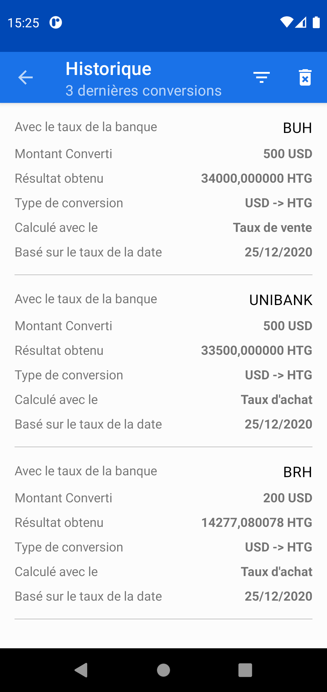
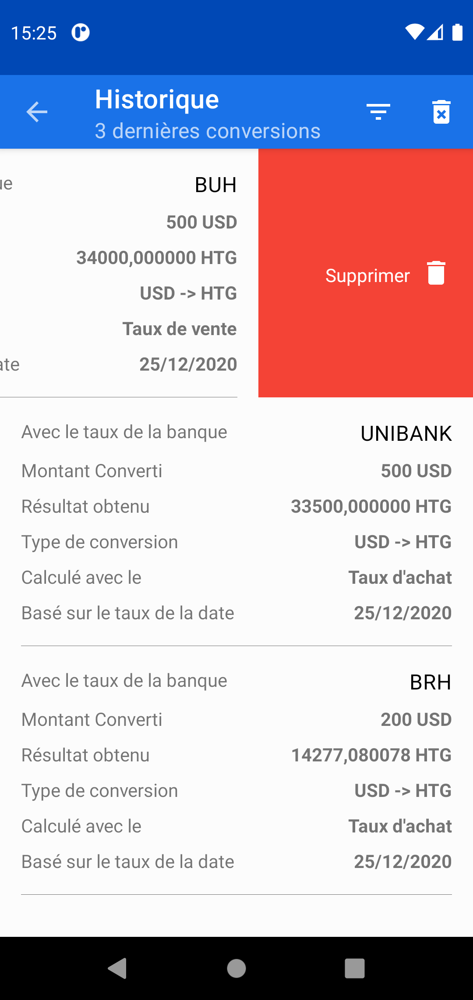
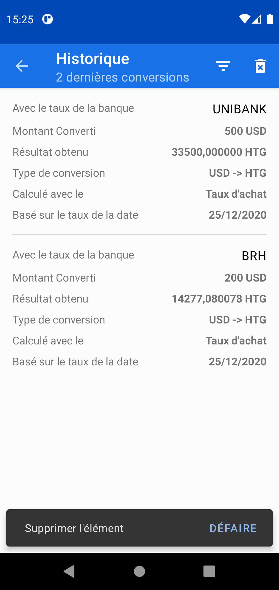
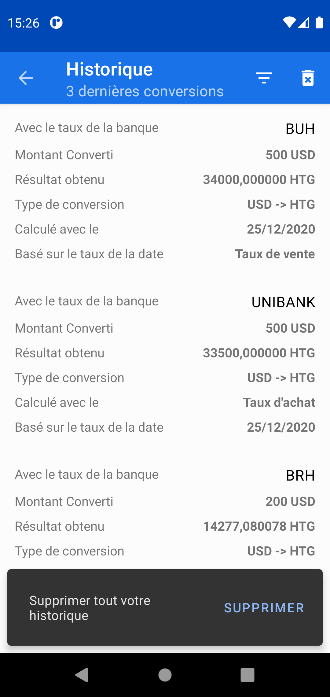

FAQ | Comment supprimer l'historique des conversions
Devise HT vous facilite de supprimer vos récentes conversions un par un ou tous les conversions définitivement. Il est aussi possible de défaire une conversion dans moins de 5 secondes que vous l'avez faites.
Voici l'exemple de conversions récentes:
Pour supprimer une conversion, il vous faut tout simplement glisser votre droigt à droite ou à gauche de l'élément que vous voulez convertir et elle sera supprimer. Néanmoins vous aurez 5 secondes pour défaire la suppresion, si vous tapper le boutton défaire, sinon elle sera définitivement supprimer. Comme par exemple:
 Pour définitivement supprimer toutes les conversions, tapper sur l'icône , vous aurez 5 secondes pour tapper sur supprimer et ainsi supprimer toutes les conversions.Comme par exemple:
